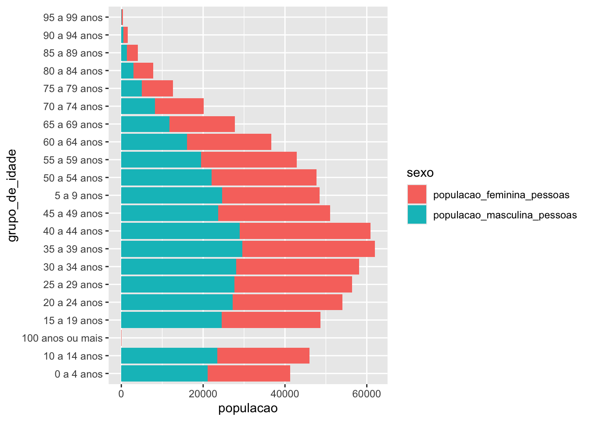
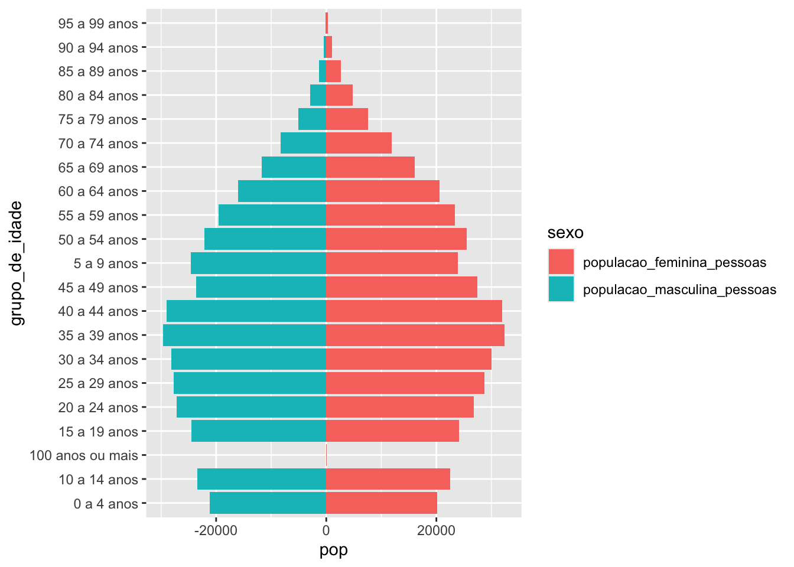
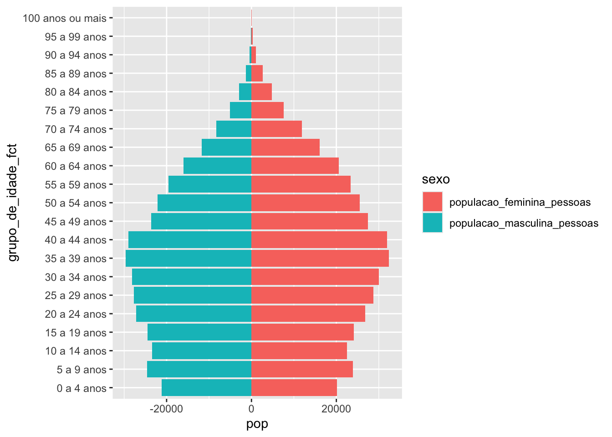
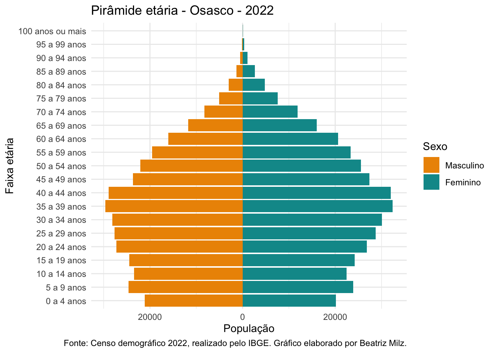
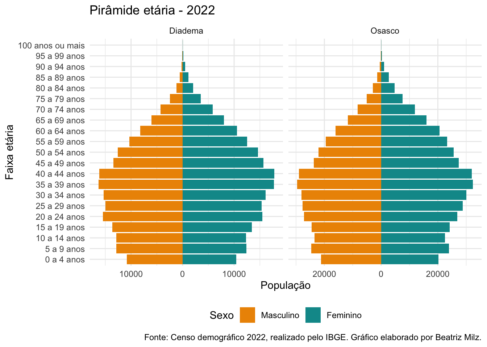

Alguns dias atrás eu estava ministrando uma aula no curso de Visualização de Dados, da Curso-R, e uma aluna (a querida Ana Paula Rocha, que também é uma das co-organizadoras da R-Ladies São Paulo) me perguntou:
Como podemos fazer uma pirâmide etária com ggplot2?
Eu achei o exercício tão divertido, que além de ter mostrado na aula (a Ana ficou feliz!), também trago em formato de tutorial.
Antes de iniciar, importante agradecer as pessoas da turma, principalmente quem estava na aula e enviou sugestões no chat durante esse exercício!
Para iniciar, vamos carregar o pacote ggplot2:
Obs 1: o meu código é cheio do operador ::. Caso você não conheça, ele serve para indicar em qual pacote uma função está, por exemplo: pacote::funcao().
Obs 2: Neste post, você pode clicar no nome das funções nos códigos, e a página da documentação da função será aberta.
O que é uma pirâmide etária?
Caso você não lembre por nome, acredito que você já tenha visto um gráfico com pirâmide etária por aí.
Uma pirâmide etária é uma representação gráfica da distribuição da população por faixa etária e sexo.
Por exemplo: a seguir, temos uma pirâmide etária da população brasileira, elaborado pelo IBGE:
Outra pirâmide etária que encontrei ao elaborar esse post foi essa publicada no Nexo:
Dados
Agora que está claro o que é uma pirâmide etária, podemos buscar os dados.
Como dito no título do texto, o objetivo é criar uma pirâmide etária utilizando os dados do Censo 2022.
Como o IBGE ainda não divulgou os microdados, podemos baixar os dados sumarizados no site Panorama Censo 2022. Como os dados já vem agregados e disponibilizados por UF ou município, precisamos baixar separadamente cada município ou UF que desejamos visualizar.
Primeiro, pesquisamos na página o município ou UF, e clicamos no botão de download. O site permite fazer download dos arquivos em CSV (arquivos de planilhas em textos separados por vírgula, ou ponto-e-vírgula) e XLSX (arquivos Excel).
Para fazer esse post, vou fazer o download dos dados para dois municípios do estado de São Paulo: Diadema (o município onde eu nasci) e Osasco (o município onde eu moro atualmente).
Os arquivos estão em um .zip, que é uma pasta compactada. Precisamos extrair os dados do .zip. Como foram apenas 2 arquivos, realizei isso manualmente, mas caso você precise fazer isso para muitos arquivos, recomendo checar a função utils::unzip(). Salvei os arquivos na pasta dados:
fs::dir_ls("dados")dados/Censo 2022 - Características dos domicílios - Diadema (SP).csv
dados/Censo 2022 - Características dos domicílios - Osasco (SP).csv
dados/Censo 2022 - Crescimento Populacional - Diadema (SP).csv
dados/Censo 2022 - Crescimento Populacional - Osasco (SP).csv
dados/Censo 2022 - Pirâmide etária - Diadema (SP).csv
dados/Censo 2022 - Pirâmide etária - Osasco (SP).csv
dados/Censo 2022 - População por cor ou raça - Diadema (SP).csv
dados/Censo 2022 - População por cor ou raça - Osasco (SP).csv
dados/Censo 2022 - População por sexo - Diadema (SP).csv
dados/Censo 2022 - População por sexo - Osasco (SP).csv
dados/Censo 2022 - Território - Diadema (SP).csv
dados/Censo 2022 - Território - Osasco (SP).csvLeitura dos dados
Percebemos que no .zip temos mais tabelas do que necessário! Vamos utilizar apenas as tabelas de pirâmide etária.
Para ler os arquivos (no nosso caso, 2 arquivos, mas funcionaria com mais), precisamos de um vetor com os caminhos (um texto que indica ao computador onde os arquivos estão guardados) e também uma função para ler esses arquivos.
Vamos primeiro criar um vetor com os caminhos:
arquivos_piramide <- fs::dir_ls("dados", regexp = "Pirâmide")
arquivos_piramidedados/Censo 2022 - Pirâmide etária - Diadema (SP).csv
dados/Censo 2022 - Pirâmide etária - Osasco (SP).csvPara ler os arquivos, podemos usar a função readr::read_csv2(), que permite ler arquivos CSV cujo separador seja o ponto-e-vírgula.
Sabendo como importar um arquivos, podemos usar a função purrr::map() para aplicar a função readr::read_csv2() em todos os arquivos do vetor que criamos anteriormente (que chamamos de arquivos_piramide). Vamos empilhar os dados em uma única tabela utilizando a função purrr::list_rbind().
dados_brutos <- arquivos_piramide |>
purrr::map(readr::read_csv2) |>
purrr::list_rbind()Espiando os dados importados, para descobrir quais variáveis temos:
dplyr::glimpse(dados_brutos)Rows: 42
Columns: 6
$ `Grupo de idade` <chr> "100 anos ou mais", "95 a 99 anos", "90…
$ `População feminina(pessoas)` <dbl> 30, 138, 477, 1136, 2080, 3501, 5876, 8…
$ `População masculina(pessoas)` <dbl> 6, 52, 193, 536, 1205, 2416, 4261, 6052…
$ Município <chr> "Diadema", "Diadema", "Diadema", "Diade…
$ `Sigla UF` <chr> "SP", "SP", "SP", "SP", "SP", "SP", "SP…
$ `Código do Município` <dbl> 3513801, 3513801, 3513801, 3513801, 351…Arrumando os dados
A primeira coisa que eu costumo fazer quando importo uma nova base de dados é padronizar os nomes. Para isso, eu gosto muito da função janitor::clean_names(). Isso facilita muito para escrever o nome das variáveis ao longo do código e evita erros de encoding:
dados_nomes_limpos <- janitor::clean_names(dados_brutos)dplyr::glimpse(dados_nomes_limpos)Rows: 42
Columns: 6
$ grupo_de_idade <chr> "100 anos ou mais", "95 a 99 anos", "90 a …
$ populacao_feminina_pessoas <dbl> 30, 138, 477, 1136, 2080, 3501, 5876, 8039…
$ populacao_masculina_pessoas <dbl> 6, 52, 193, 536, 1205, 2416, 4261, 6052, 8…
$ municipio <chr> "Diadema", "Diadema", "Diadema", "Diadema"…
$ sigla_uf <chr> "SP", "SP", "SP", "SP", "SP", "SP", "SP", …
$ codigo_do_municipio <dbl> 3513801, 3513801, 3513801, 3513801, 351380…Boa!!
Será que deu certo e temos dados dos dois municípios? Podemos conferir:
unique(dados_nomes_limpos$municipio)[1] "Diadema" "Osasco" Sim! Temos dados para Diadema e Osasco.
Agora, é necessário realizar um processo de ir pensando na criação do gráfico, para planejar quais são os tratamentos que serão necessários. Esse processo é difícil de descrever em texto, mas acredito que é interessante mostrar esse “vai e volta” entre a criação do gráfico e o tratamento dos dados, pois é assim que normalmente precisamos fazer no dia-a-dia.
Se você está sem paciência de ver o raciocínio da construção do gráfico, recomendo pular para o final do texto e ver o resultado! Também é possível acessar um código similar nesse Gist.
Estrutura de um ggplot
Quando criamos o ggplot, pensamos nos seguintes elementos:
Quais são as variáveis que precisamos utilizar?
Em qual atributo estético (
aes()) vamos mapear cada variável?Qual é a geometria (
geom_*()) precisamos usar?
Imaginando o nosso gráfico
Primeiro vamos pensar nas variáveis necessárias: Grupo de idade, população e sexo.
Vamos pensar agora onde cada variável é mapeada:
Grupo de idade: eixo Y.
População: eixo X.
Sexo: cor de preenchimento da barra.
E qual é a geometria usada? Nesse caso, é um gráfico de barras. Neste caso, utilizamos o geom_col().
Alterando o formato da base: pivoting!
Ao imaginar o gráfico, percebemos que existe um certo problema: precisamos de uma coluna com a população, e outra com o sexo, para utilizar no gráfico. Porém na tabela temos duas colunas separadas, que apresenta uma das variáveis relevantes no nome da coluna: populacao_feminina_pessoas e populacao_masculina_pessoas.
Percebe? A informação do sexo está no nome da coluna!
Precisamos alterar isso então, com o que chamamos de “pivotagem”. Existem duas funções de pivotagem: tidyr::pivot_longer() (o resultado é uma base “mais longa”) e tidyr::pivot_wider() (o resultado é uma base “mais larga”).
Nesse caso, temos informações no nome das colunas ("populacao_feminina_pessoas" e "populacao_masculina_pessoas"), que queremos transformar em uma variável chamada “sexo”.
Tentei demonstrar abaixo um exemplo curto:
- Essa é uma linha da tabela original: temos uma linha por combinação de
grupo_de_idadeemunicipio. A informação sobre o sexo está no nome das colunas.
| grupo_de_idade | populacao_feminina_pessoas | populacao_masculina_pessoas | municipio | sigla_uf | codigo_do_municipio |
|---|---|---|---|---|---|
| 100 anos ou mais | 30 | 6 | Diadema | SP | 3513801 |
- Esse é o formato que queremos! Agora temos uma coluna para o sexo, e outra coluna para a população. Veja que agora temos DUAS linhas para cada combinação de
grupo_de_idadeemunicipio. Por isso, esse tipo de transformação deixa a base “mais longa”.
| grupo_de_idade | municipio | sigla_uf | codigo_do_municipio | sexo | populacao |
|---|---|---|---|---|---|
| 100 anos ou mais | Diadema | SP | 3513801 | populacao_feminina_pessoas | 30 |
| 100 anos ou mais | Diadema | SP | 3513801 | populacao_masculina_pessoas | 6 |
Usando a função tidyr::pivot_longer(), indicamos quais são as colunas que vamos utilizar para a “pivotagem”. Depois, eu renomeio as variáveis para ficar fácil de entender o que cada coluna representa.
dados_piramide_longo <- dados_nomes_limpos |>
tidyr::pivot_longer(cols = c(
"populacao_feminina_pessoas",
"populacao_masculina_pessoas"
)) |>
dplyr::rename(populacao = value, sexo = name)Agora temos a coluna de sexo e população separadas, e a tabela também ficou com o dobro de linhas!
dplyr::glimpse(dados_piramide_longo)Rows: 84
Columns: 6
$ grupo_de_idade <chr> "100 anos ou mais", "100 anos ou mais", "95 a 99 a…
$ municipio <chr> "Diadema", "Diadema", "Diadema", "Diadema", "Diade…
$ sigla_uf <chr> "SP", "SP", "SP", "SP", "SP", "SP", "SP", "SP", "S…
$ codigo_do_municipio <dbl> 3513801, 3513801, 3513801, 3513801, 3513801, 35138…
$ sexo <chr> "populacao_feminina_pessoas", "populacao_masculina…
$ populacao <dbl> 30, 6, 138, 52, 477, 193, 1136, 536, 2080, 1205, 3…Primeira tentativa de criar um gráfico
Vamos para a primeira tentativa de criar um gráfico. Já aviso: não vai dar certo, pois a base ainda não está pronta!
Por enquanto, vamos usar apenas os dados de Osasco:
dados_piramide_longo |>
# Filtrando apenas dados para o município de Osasco
dplyr::filter(municipio == "Osasco") |>
# Iniciando o ggplot
ggplot() +
# Quais são as variáveis que queremos mapear?
aes(y = grupo_de_idade, x = populacao, fill = sexo) +
# Qual é a geometria?
geom_col()
Bom, como eu já tinha avisado, deu bem errado.
Um passo importante é parar, respirar, e tentar anotar TODAS as coisas que a gente acha que precisa melhorar nesse gráfico (se você quiser, faça isso antes de continuar a ler).
Lista do papai noel: o que precisamos melhorar?
Vamos lá criar nossa lista do papai noel de coisas que precisamos arrumar no gráfico que dependem do tratamento de dados:
As barras não estão formando uma pirâmide. Elas estão acumulando para o mesmo lado!
A variável
grupo_de_idadeestá seguindo a ordem alfabética, e não a ordem das faixas etárias!Os valores da variável
sexoestão com o texto completo do nome das colunas que elas foram extraídas. Precisamos arrumar.
Tratando os dados segundo nossa lista do papai noel
Alguns dos itens acima necessitam ser arrumados no tratamento dos dados, e vamos fazer um por vez, seguindo os pontos acima.
1) Formato da pirâmide
- “As barras não estão formando uma pirâmide. Elas estão acumulando para o mesmo lado!” - Na pirâmide, o “centro” é o valor 0 no eixo x. Portanto, podemos multiplicar os valores de população de um dos sexos por -1, deixando-os negativo. Fiz com a função
dplyr::case_when(), e a regra usada para cada linha foi:
Quando o valor da variável
sexofor igual á"populacao_masculina_pessoas", queremos que o valor da população seja multiplicado por -1;Quando o valor da variável
sexofor igual á"populacao_feminina_pessoas", queremos manter o valor original para população.
Criando o gráfico com essa versão da tabela:
dados_piramide_longo_2 |>
# Filtrando apenas dados para o município de Osasco
dplyr::filter(municipio == "Osasco") |>
# Iniciando o ggplot
ggplot() +
# Quais são as variáveis que queremos mapear?
aes(y = grupo_de_idade, x = pop, fill = sexo) +
# Qual é a geometria?
geom_col()
Agora já estamos um pouco mais perto!
2) Ordem em grupo_de_idade
Por padrão, categorias são representadas no ggplot2 em ordem alfabética. Para arrumar isso, precisamos transformar a variável grupo_de_idade em um fator, e declarar a ordem das categorias:
dados_piramide_longo_3 <- dados_piramide_longo_2 |>
dplyr::mutate(
grupo_de_idade_fct = factor(
grupo_de_idade,
levels = c(
"0 a 4 anos",
"5 a 9 anos",
"10 a 14 anos",
"15 a 19 anos",
"20 a 24 anos",
"25 a 29 anos",
"30 a 34 anos",
"35 a 39 anos",
"40 a 44 anos",
"45 a 49 anos",
"50 a 54 anos",
"55 a 59 anos",
"60 a 64 anos",
"65 a 69 anos",
"70 a 74 anos",
"75 a 79 anos",
"80 a 84 anos",
"85 a 89 anos",
"90 a 94 anos",
"95 a 99 anos",
"100 anos ou mais"
)
))Criando o gráfico com essa versão da tabela:
dados_piramide_longo_3 |>
# Filtrando apenas dados para o município de Osasco
dplyr::filter(municipio == "Osasco") |>
# Iniciando o ggplot
ggplot() +
# Quais são as variáveis que queremos mapear?
aes(y = grupo_de_idade_fct, x = pop, fill = sexo) +
# Qual é a geometria?
geom_col()
Agora sim, parece o formato mais próximo de uma pirâmide etária (sem aqueles buracos no meio!).
3) Arrumar a variável sexo
Os valores da variável sexo estão com o texto completo do nome das colunas que elas foram extraídas. Podemos arrumar com a função dplyr::case_when(), com um procedimento similar ao que fizemos no ponto 1:
Criando o gráfico com essa versão da tabela:
Visualizando os dados
Agora que já arrumamos os dados, podemos trabalhar em melhorar o gráfico. Vamos criar nossa listinha de papai-noel parte 2:
A primeira coisa que me chama atenção é: ninguém merece essa paleta de cores “meninas usam rosa, meninos usam azul”!
Aparecem valores negativos no eixo X. Mas não faz sentido população negativa, certo?
Vamos deixar mais bonito? Colocar os textos, mudar o tema, etc…
dados_piramide_longo_4 |>
# Filtrando apenas dados para o município de Osasco
dplyr::filter(municipio == "Osasco") |>
# Iniciando o ggplot
ggplot() +
# Quais são as variáveis que queremos mapear?
aes(y = grupo_de_idade_fct, x = pop, fill = sexo_renomeado) +
# Qual é a geometria?
geom_col() +
# Alterando as cores de preenchimento usadas
scale_fill_manual(values = c("#ed9400", "#049899")) +
# Queremos que os valores do eixo X sejam sempre
# positivos. Portanto, podemos usar a função abs()
# nos labels (essa função transforma qualquer número)
# em positivo.
scale_x_continuous(labels = abs) +
# Alterando o tema
theme_minimal() +
# Alterando os textos
labs(
x = "População",
y = "Faixa etária",
fill = "Sexo",
title = "Pirâmide etária - Osasco - 2022",
caption = "Fonte: Censo demográfico 2022, realizado pelo IBGE. Gráfico elaborado por Beatriz Milz."
)
Visualizando dados de 2 municípios
Para ver os dados dos dois municípios, podemos usar a função facet_wrap() do ggplot2!
Porém, como a população desses municípios é bem diferente, para facilitar a visualização da diferença na pirâmide, o melhor é “liberar” as escalas do eixo X (usando o argumento scales = "free_x"). Isso é um pouco perigoso, pois os valores do eixo X ficam diferentes, e as pessoas precisam prestar mais atenção quando for comparar. Porém, se a gente não fizer isso, a pirâmide de Diadema fica “esmagada”, por ter uma população menor.
dados_piramide_longo_4 |>
# Iniciando o ggplot
ggplot() +
# Quais são as variáveis que queremos mapear?
aes(y = grupo_de_idade_fct, x = pop, fill = sexo_renomeado) +
# Qual é a geometria?
geom_col() +
facet_wrap(~municipio, scales = "free_x") +
# Alterando as cores de preenchimento usadas
scale_fill_manual(values = c("#ed9400", "#049899")) +
# Queremos que os valores do eixo X sejam sempre
# positivos. Portanto, podemos usar a função abs()
# nos labels (essa função transforma qualquer número)
# em positivo.
scale_x_continuous(labels = abs) +
# Alterando o tema
theme_minimal() +
# Alterando os textos
labs(
x = "População",
y = "Faixa etária",
fill = "Sexo",
title = "Pirâmide etária - 2022",
caption = "Fonte: Censo demográfico 2022, realizado pelo IBGE. Gráfico elaborado por Beatriz Milz."
) +
theme(
legend.position = "bottom"
)
A discussão sobre possíveis diferenças (ou semelhanças) entre os municípios não está no escopo deste post. Quem sabe em um outro futuro?
Conclusão
Neste tutorial, vimos um pouco sobre como é possível criar uma pirâmide etária com ggplot2.
Eu espero que o texto tenha ficado compreensível!
Caso alguém tenha alguma sugestão (ou alguma parte não ficou claro), me avisem por favor!!
Muito obrigada vocês pela leitura, e novamente, agradeço a Curso-R e as pessoas participantes do curso de Visualização de Dados!